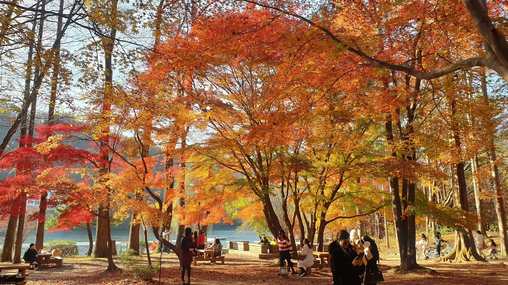
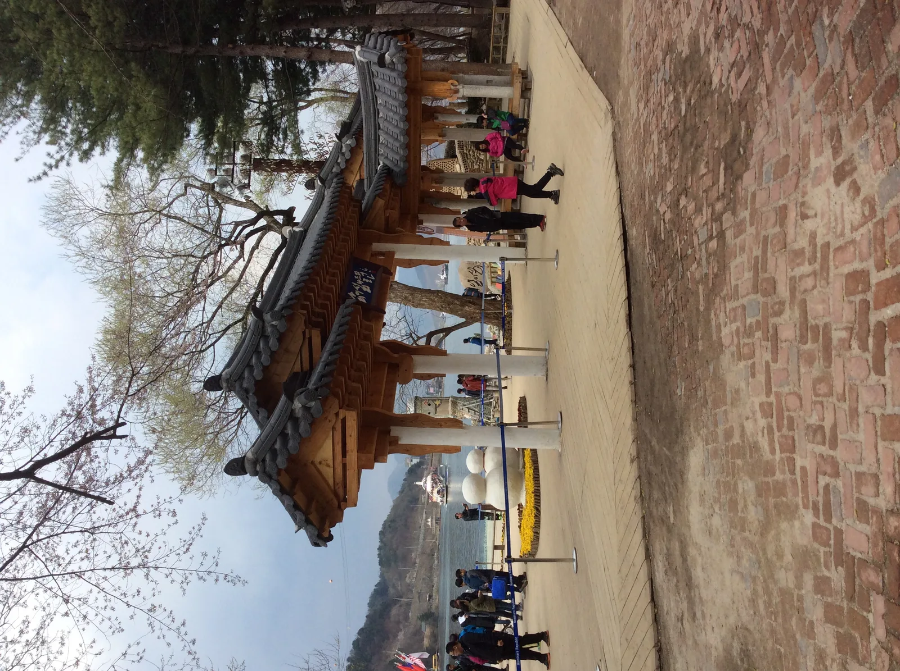
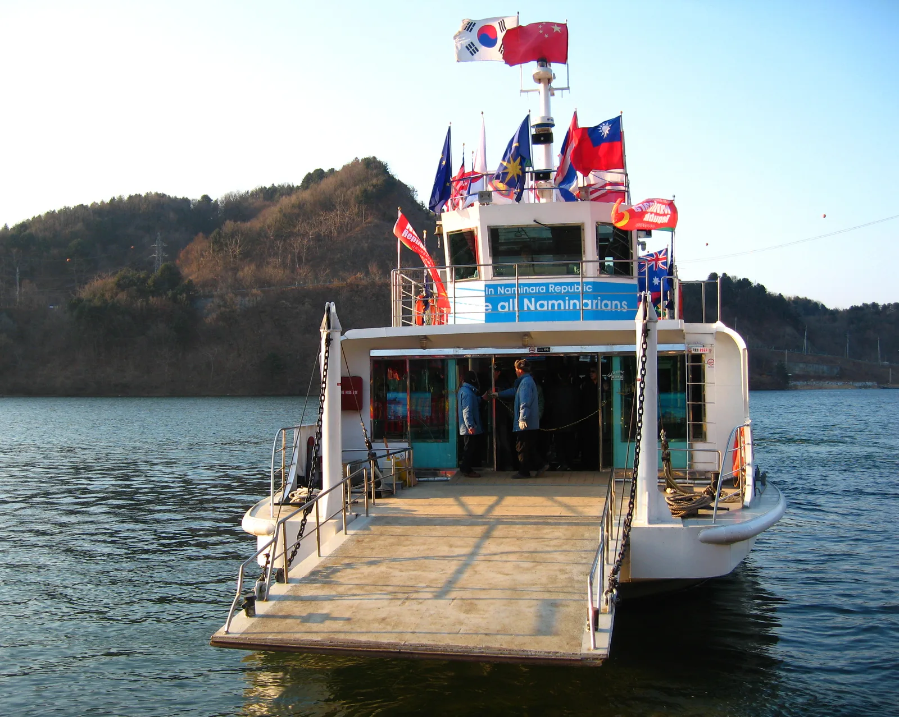
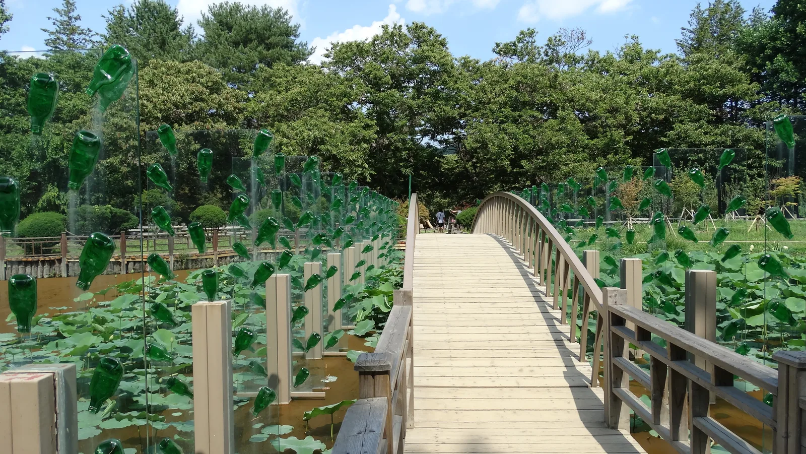

▲ 가을이 절정에 이른 남이섬의 산책로. 단풍나무가 붉고 노란 잎을 드리우고 있다 사진=Wikimedia Commons (Katsujiro Maekawa, CC0)
1. 남이섬 단풍, 올해는 언제가 절정일까
남이섬의 가을은 한 나무씩 순서대로 물든다. 10월 중순 계수나무와 단풍나무가 먼저 붉게 타오르면, 10월 하순부터 은행나무가 노랗게 물들기 시작해 11월 중순까지 이어진다. 남이섬을 대표하는 메타세쿼이아는 가장 늦게, 11월 초순에야 고운 갈색으로 절정에 이른다. 붉은 단풍의 화려함 대신 우아한 색감을 내는 게 메타세쿼이아길의 매력이다.
즉 남이섬 가을은 짧게 끝나지 않는다. 10월 중순부터 11월 중순까지 한 달 가까이, 매주 찾아가도 다른 풍경을 볼 수 있는 구조다. 한 매체는 남이섬을 2025년 한국 가을 경치 1위로 꼽기도 했고, 연간 330만 명이 이 섬을 찾는 이유로 가을 풍경을 첫손에 꼽는다.
2. 나미나라공화국이란 — '입장료'가 아니라 '입국비'
남이섬은 스스로를 '나미나라공화국(Naminara Republic)'이라는 동화적 컨셉의 자치 공간으로 소개한다. 그래서 입장료도 '입국비' 개념으로 안내되고, 방문객은 별도의 '여권'을 발급받아 남이섬을 드나들 수 있다. 실제로 선착장에는 태극기를 비롯한 각국 국기가 걸려 있고, 선박에도 '나미나라공화국(In Naminara Republic)' 문구가 큼직하게 적혀 있다.

▲ 남이섬 선착장 인근의 '나미나라공화국' 환영 게이트. 이 섬은 스스로를 하나의 동화 같은 자치 공화국으로 소개한다 사진=Wikimedia Commons (::::=UT::::, CC BY-SA 3.0)
| 구분 | 요금 | 비고 |
|---|---|---|
| 일반 성인 | 19,000원 | 왕복 선박 이용료 포함 |
| 중·고등학생 | 16,000원 | 청소년 우대 요금 |
| 36개월~초등학생 | 13,000원 | 특별 우대 요금 |
| 운영시간 | 08:00~21:00 | 연중무휴 |
만 70세 이상(경로), 장애의 정도가 심한 중증 장애인, 국가유공자·유족증 소지자 본인도 청소년과 같은 16,000원 우대 요금이 적용된다. 다만 매표소에서 신분증(또는 복지카드·유공자증)을 제시해야 현장 할인을 받을 수 있다. 정확한 최신 요금과 각종 할인 조건(경기도민, 단체 등)은 방문 전 남이섬 공식 사이트에서 확인 가능하다.
3. 가평선착장에서 배 타고 5분 — 배편·운영시간
남이섬은 행정구역상 강원도 춘천시에 속하지만, 배를 타는 선착장은 경기도 가평군에 있다. 가평 남이섬 선착장에서 배를 타면 남이섬까지 약 5분이면 도착한다. 짧은 거리지만, 이 배를 타는 순간부터 '나미나라공화국 입국'이라는 컨셉이 시작되는 셈이다.

▲ 'In Naminara Republic'이라는 문구를 단 남이섬행 선박. 각국 국기를 매달고 운항한다 사진=Wikimedia Commons (Minseong Kim, CC BY-SA 4.0)
| 구분 | 시간 |
|---|---|
| 남이섬행 첫배 | 08:00 |
| 남이섬행 막배 | 21:00 |
| 남이섬발 첫배 | 08:05 |
| 남이섬발 막배 | 21:05 |
📍 배 시간, 계절·기상에 따라 바뀔 수 있다
선박 운항 간격과 막배 시간은 계절·요일·기상 상황에 따라 조정될 수 있다. 봄꽃·여름 휴가철·가을 단풍철 같은 성수기에는 첫배가 앞당겨지고 막배가 늦춰지는 연장 운항이 이뤄지기도 하며, 방문객이 몰리는 단풍철 주말에는 배차 간격도 평소보다 짧아지는 경우가 많다. 출발 전 공식 사이트나 현장 안내를 다시 확인하는 편이 안전하다.
4. 메타세쿼이아길·잣나무길 — 남이섬 단풍 명소
남이섬 가을 산책의 핵심은 크게 두 갈래다. 하나는 계수나무·단풍나무·은행나무가 알록달록 섞여 보이는 중앙 산책로, 다른 하나는 남이섬을 상징하는 메타세쿼이아길이다. 여기에 사시사철 푸른 잣나무길(소나무길)이 대비를 이루며 남이섬 특유의 가로수 풍경을 완성한다.
▲ 실제 촬영 사진이 아닌, 가을철 메타세쿼이아 가로수길 분위기를 형상화한 AI 생성 예시 이미지다 이미지=AI 생성
| 수종 | 절정 시기 | 특징 |
|---|---|---|
| 계수나무·단풍나무 | 10월 중순~ | 붉고 화려한 색감, 가장 먼저 물듦 |
| 은행나무 | 10월 하순~11월 중순 | 노란빛, 단풍보다 다소 늦게 절정 |
| 메타세쿼이아 | 11월 초순 | 고운 갈색, 가장 늦게 절정에 도달 |
| 잣나무(소나무) | 사계절 상록 | 단풍과 대비되는 초록빛 유지 |
잣나무길처럼 사철 푸른 침엽수 가로수길은 계절과 무관하게 남이섬 특유의 정취를 보여준다. 단풍철에는 이 초록 침엽수길과 알록달록한 활엽수길을 함께 걷는 코스로 짜는 여행자가 많다.

▲ 남이섬 잣나무길. 사철 푸른 침엽수 가로수가 늘어서 있다 사진=Wikimedia Commons (Shinae Hyun, CC BY-SA 4.0)
5. 산책로 말고 또 뭘 볼까 — 섬 안 볼거리와 자라섬 연계 관광
남이섬은 산책로 외에도 유리공예·설치미술 등 포토스팟이 곳곳에 있다. 연못 위로 놓인 다리 옆에 초록 유리병을 매단 설치미술처럼, 계절과 무관하게 즐길 수 있는 볼거리도 많다.

▲ 연못 위 다리를 따라 설치된 유리병 조형물. 남이섬 곳곳에는 이런 포토스팟이 흩어져 있다 사진=Wikimedia Commons (Jocelyndurrey, CC BY-SA 4.0)
남이섬에서 가깝게 자라섬도 함께 묶어 돌아보는 코스가 인기다. 특히 2026년에는 10월 9~11일, 제23회 자라섬재즈페스티벌이 열린다. 한불 수교 140주년을 맞아 프랑스를 포커스 국가로 정했고, 유료 공연존 외에 가평 읍내에서는 무료 스트리트 공연도 즐길 수 있어 초등학생 이하는 무료로 입장할 수 있다. 남이섬 단풍철과 시기가 겹치는 만큼, 낮에는 남이섬 단풍을 걷고 저녁에는 자라섬 재즈를 즐기는 식의 하루 코스를 짜는 여행자도 많다.
📍 자라섬은 차량 진입이 제한된다
다만 자라섬 축제 기간에는 섬 안으로 차량이 들어갈 수 없다. 자가용을 가져가더라도 외곽 지정 주차장에 세운 뒤 걸어 들어가거나, 주차장에서 운영하는 무료 셔틀버스로 이동해야 한다. 서울 등 주요 지역에서 자라섬까지 오가는 유료 예약제 셔틀버스도 매년 별도로 운영되니, 남이섬과 자라섬을 하루에 묶어 돌아볼 계획이라면 이동 수단을 미리 확인해두는 게 좋다.
남이섬 짚와이어(스카이라인 짚와이어)를 이용하면 자라섬을 경유해 남이섬으로 들어가는 코스도 선택할 수 있다. 80m 높이 짚타워에서 출발해 자라섬을 거쳐 활강한 뒤, 남이섬에서는 배를 타고 나오는 방식이다. 이용료에는 남이섬 입장료와 귀환 선박료가 포함돼 있어, 일반 입장과는 다른 경로로 섬에 들어가 보는 재미가 있다. 정확한 코스별 요금은 방문 시기에 따라 달라질 수 있어 최신 요금표 확인 가능하다.
6. 드라이브 코스와 주차 — 가평선착장까지
자가용으로 이동한다면 내비게이션에 '가평선착장' 또는 '남이섬 선착장'을 입력하면 된다. 서울에서는 서울양양고속도로나 46번 국도(경춘로)를 타고 가평 방향으로 이동하는 경로가 일반적이고, 강촌·청평을 지나는 구간에서도 가을 단풍을 함께 즐길 수 있다.
▲ 실제 촬영 사진이 아닌, 가평 방면 강변 드라이브 코스 분위기를 형상화한 AI 생성 예시 이미지다 이미지=AI 생성
가평선착장에는 제1~4주차장이 있으며, 장애인 전용 주차구역은 제2·4주차장에 마련돼 있다. 소형차 기준 일반 정산 요금은 6,000원이지만, 모바일(카카오T) 정산 시 우대 요금이 적용돼 5,500원 수준으로 낮아진다. 최초 12시간은 기본요금이고 초과 시 1시간당 1,000원이 추가된다. 정산은 카드결제만 가능하니 미리 참고해두면 좋다.
▲ 산으로 둘러싸인 북한강을 가로질러 남이섬으로 향하는 선박 사진=Wikimedia Commons (CC BY-SA 3.0)
단풍철 주말에는 가평선착장 진입로와 주차장이 상당히 붐빈다. 되도록 오전 일찍 출발하고, 자라섬재즈페스티벌 기간(2026년 10월 9~11일)과 겹치는 주말은 가평 읍내 교통 정체까지 고려해 여유 있게 움직이는 편이 좋다.
✅ 출발 전 확인할 것
· 배를 타는 선착장은 경기도 가평, 섬은 행정구역상 강원도 춘천
· 입장료(입국비)는 왕복 선박료 포함 성인 19,000원
· 배 운항 시간은 계절·기상에 따라 변동 가능
· 메타세쿼이아길은 은행나무보다 늦은 11월 초순이 절정
· 자라섬은 축제 기간 차량 진입 제한, 셔틀·대중교통 이용
· 단풍철 주말은 오전 일찍 출발 권장